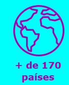

| Visualizar como página web |
|
Contra números não há argumentos. Web Summit é o polo da tecnologia e da inovação. |
|
O Whow! e o OasisLab são iniciativas brasileiras de inovação e incentivo a uma cultura corporativa e empreendedora. Focadas na transformação desses hábitos brasileiros, elas firmaram parceria e estão divulgando o Web Summit entre seus seguidores.
A maior conferência de tecnologia e transformação digital do mundo vai desembarcar em Lisboa no mês de novembro, e, se você ainda não confia no poder de transformação das novas práticas de negócio apresentadas por lá, veja só esses números: |
|  |
|
Essa convergência de pessoas de todo o globo para o mesmo lugar não é coincidência. O mercado mundial da inovação se encontra no Web Summit e retorna para seus países com um conceito renovado e atualizado sobre o
verdadeiro ecossistema global de inovação.
Agora pense em todos esses números distribuídos em quatro dias de festival com o plus da cobertura da imprensa mundial levando todo esse conhecimento para cada canto do globo: |
|
+ de 2.600 jornalistas registrando depoimentos
icônicos como:
“A melhor conferência de tecnologia do planeta” – Forbes “Davos para geeks” - Bloomberg “Glastonbury para geeks” - The Guardian |
|
Dúvidas ou mais informações: ronald@oasislab.com.br /(11) 97525-9039 |

|